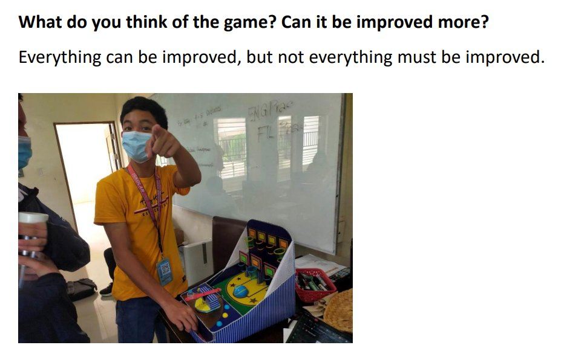

Pisay Culture is simple, You make chika, or you become the chika...
New year means new chika! New rivalries, new campus crushes, everything is new and changing! Here are some of the biggest gossips right now!
During their christmas party, not only did Grade 9-Neon have the most socially-rivalrous party with the Geng-geng theme, they also made one of the greatest relationship-starting accessories of all time. A necklace that can fit two people saying "Kami na!".
Although it was mainly used for light friendships. One certain couple did become a victim to this hillarious paraphernalia. Grade 9-Neon students Rene Adrian Espanola and Dominique Anne Latumbo were caught off-guard as fellow classmate Francis Nigel de Juan puts the necklace on top of both of their shoulders.
Not only can drama be made via face-to-face interactions, but also online! Two anonymous Pisay scholars, one from SRC, have started a fight between each other regarding the morality of a certain pisay remix. Although this video has garnered multiple positive feedback, this certain scholar is against it.
"As a PSHS Scholar from SRC , I request to please take this down as this is a copyright and making a remix of DOST Hymn without their consent. Please Thank You"
@warfareveteran1700 said with absolutely bad grammar.
This opinon has garnered multiple negative replies, including one that replied with 4 continuous "nerd" emojis.
Another big gossip that originated from something peculiar is the username of a VALORANT player who named themselves "KirbyxAsh1234567". Although there is a lack of footage regarding this, there were a lot of key witnesses who saw this username. One certain VALORANT player stated that this username was a nod to the time Pisaynons would put ships in their VALORANT usernames such as "thirdyxcydel1234" and "renexgab1234".

Now for the most exciting part, the Anecdotal Reports!
According to insider information from our anyonymous middlemen, Former class president Marl Louise Viray has been issued an AR for ambiguous reasons by a fellow Batch 2027 scholar. Although the middleman is not willing to share the complaint due to personal reasons, they have remarked that the reason why Viray got AR'ed was rather hillarious. The middleman then further stated that he supports Marl in this situation and that this is a completely false accusation.